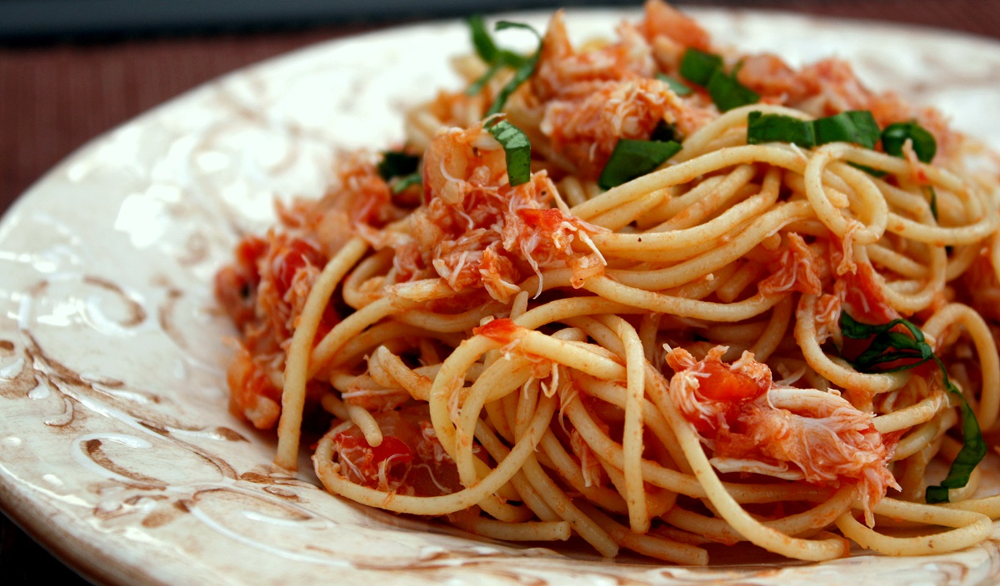
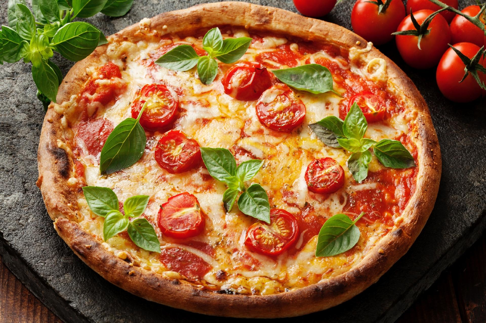
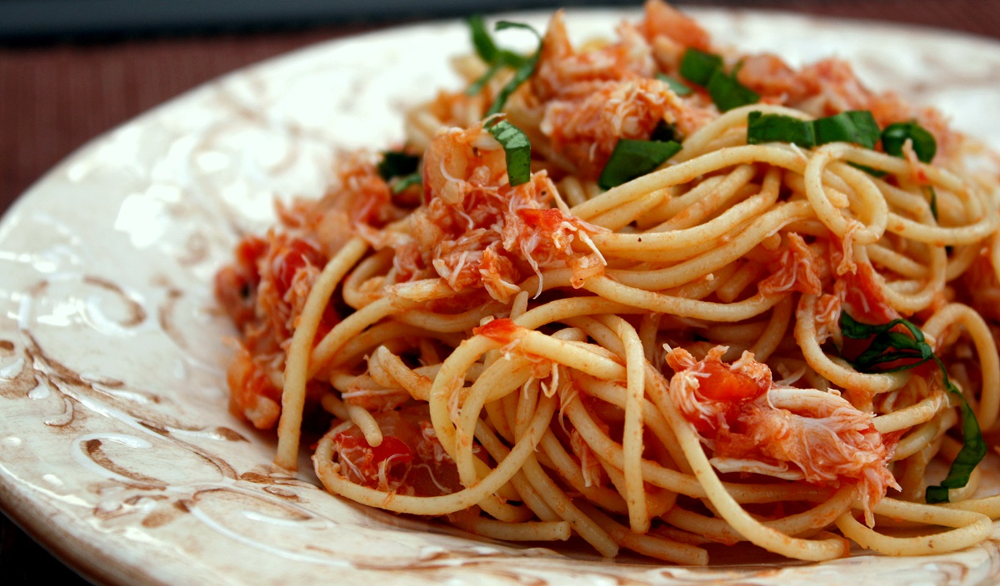
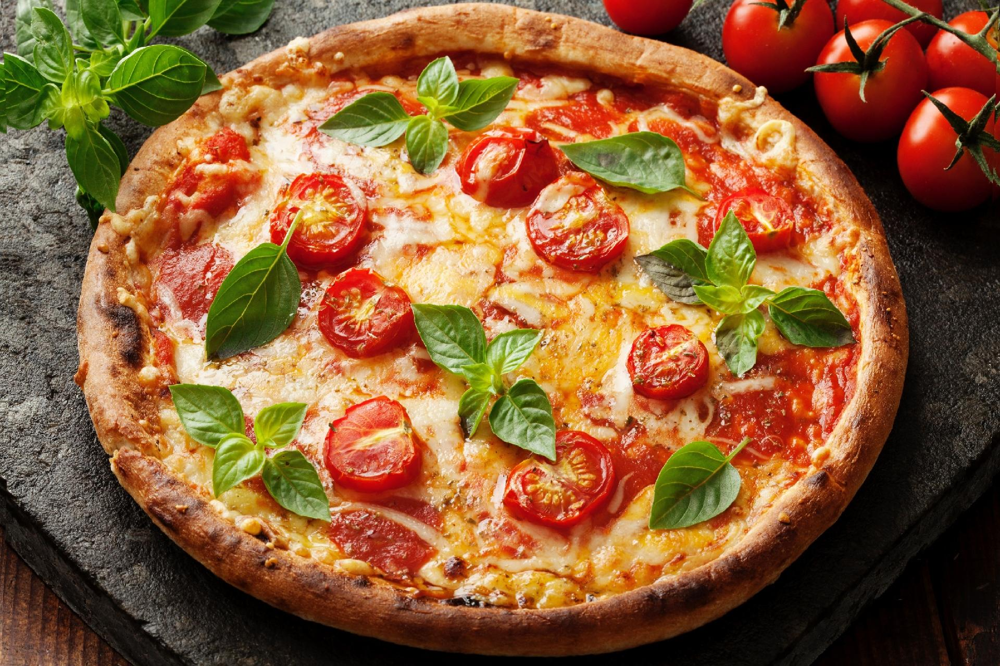
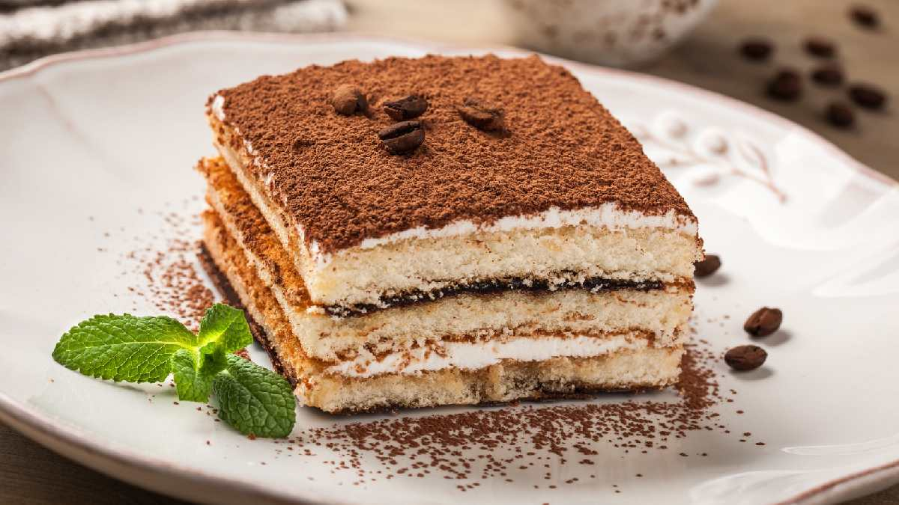
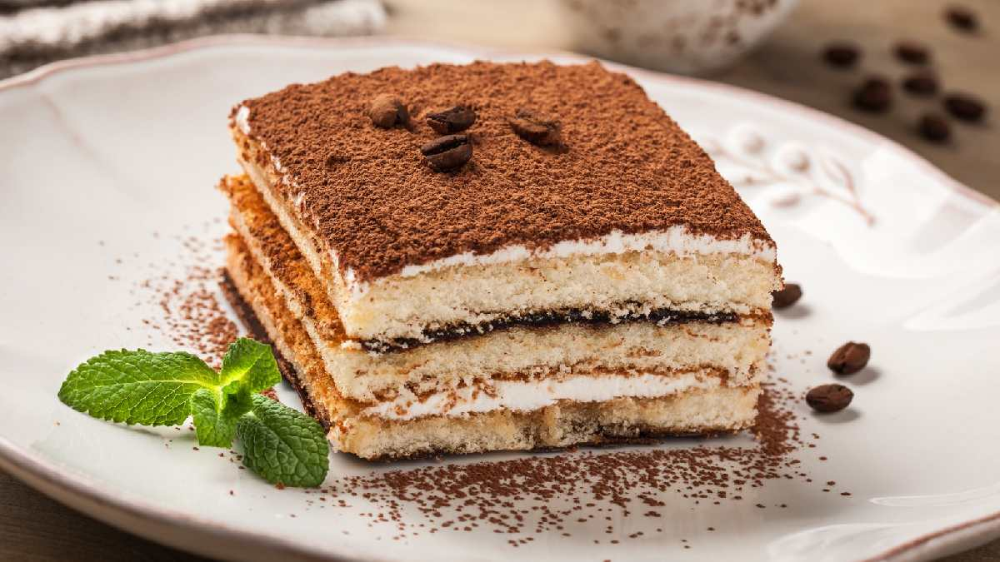

CULINÁRIA
A culinária italiana evoluiu através dos séculos, ao longo das mais variadas alterações sociais e políticas; suas raízes podem ser traçadas até o século IV a.C. Mudanças significantes ocorreram com a descoberta do Novo Mundo, que ajudaram a moldar muito do que é conhecido como a culinária italiana hoje em dia, através da introdução de ingredientes como batatas, tomates, pimentões e milho, todos eles parte central da cozinha daquele país, e que no entanto só foram introduzidos em grande escala a partir do século XVIII.
É uma das culinárias mais populares do mundo, com suas pizzas, massas, vinhos e outros tipos de preparações. Tanto ingredientes como pratos mudam de região para região do país. Existem diversos pratos regionais importantes que também assumiram caráter nacional, enquanto diversos pratos proliferaram, em diversas variantes, por todo o mundo. Queijo e vinho são uma parte importantíssima da cozinha do país, desempenhando diferentes papeis tanto regionalmente quanto nacionalmente, com sua grande variedade e leis de regulamentação (Denominazione di origine controllata, DOC). Também o café, mais especificamente o espresso, assumiu um papel de destaque relevante na cultura gastronômica da Itália.
A culinária italiana evoluiu extensivamente ao longo dos séculos. Embora a Itália como país, tal qual a conhecemos hoje, não tenha se formado até a Década de 60 do Século XIX, a culinária típica daquele país apresenta raízes que vão até pelo menos o século IV a.C. Através de diversas influências ao longo desta sua história, inclusive das regiões vizinhas, e devido à mudanças ocorridas depois de conquistas e distúrbios políticos, assim como a descoberta do Novo Mundo, formou-se uma tradição culinária concreta, que é reconhecida hoje em dia como uma das mais destacadas do mundo, onde surgiu a Pizza, a Lasanha e muitas outras massas que conhecemos.
.
.webp)

 



 
